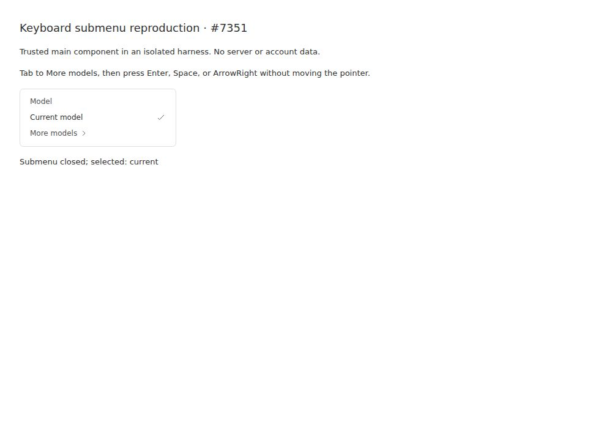
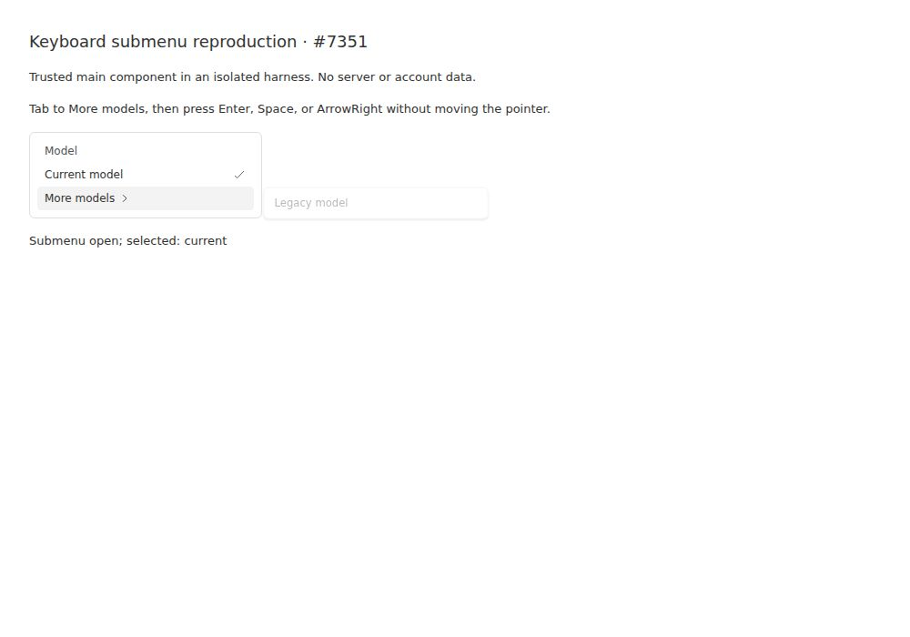
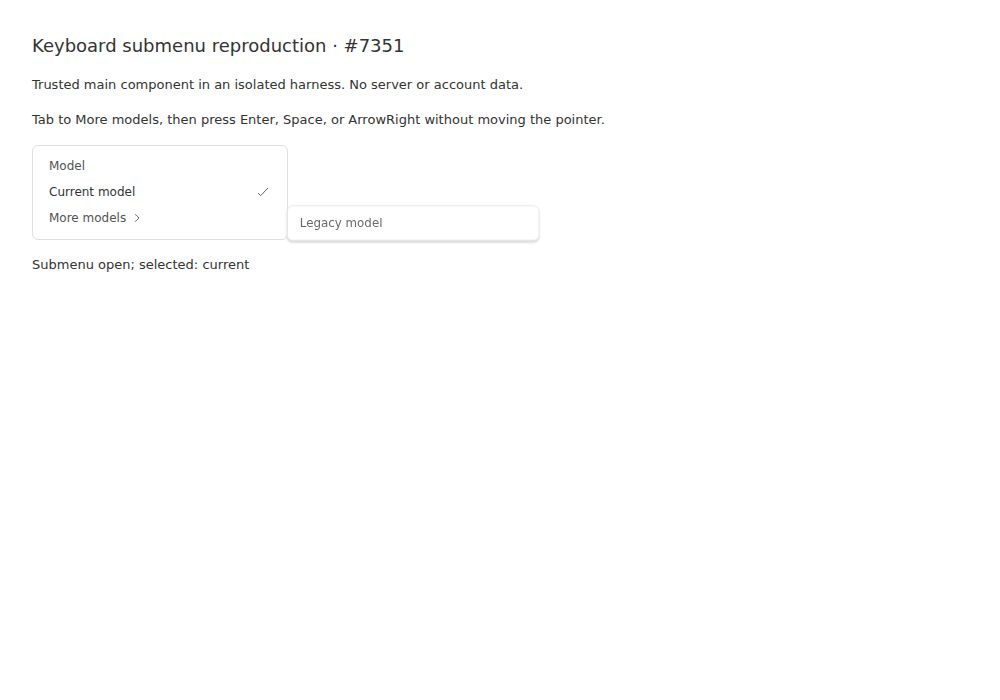

#7351 · Hover-only dismissal overrides keyboard submenu activation
Verdict: REPRODUCED · Root-cause confidence: high
1. TL;DR
The desktop model menu has an extra-model submenu that works when hovered but immediately closes when activated without a pointer hover. Its dismissal effect treats “not the last hovered row” as a reason to close every open submenu, including keyboard-opened ones. Four focused keyboard regression cases fail on unmodified production code, and all four fail again in a second clean checkout of the same trusted main commit. A real headless Chromium run of the unchanged menu component confirms Enter, Space, and ArrowRight leave the submenu closed, while pointer hover opens it. A two-file, 86-changed-line fix separates hover activation from explicit activation; the focused cases and 181 relevant existing/new tests pass afterward.
2. Claims vs findings
| Reported claim | Finding | Evidence |
|---|---|---|
| Keyboard activation cannot keep the submenu open without hovering first. | Verified | Enter, Space, legacy Spacebar, and ArrowRight each produce aria-expanded=false in the full-picker regression; modern keys also verified in Chromium. |
| Pointer-hover state incorrectly controls keyboard dismissal. | Verified | The real effect closes on open && !isLastHovered. The hover provider initializes its last item to null; keyboard activation does not assign one. |
| The first submenu item cannot receive sustained focus in the reported scenario. | Verified | After browser Enter, focus remains on the trigger and no legacy-item button exists. Post-fix tests wait for focus on that item. |
| A local regression test already exists outside main. | Unverified | No reporter-provided test was used. A regression was authored from trusted repository behavior. |
3. Environment
- Trusted repository: public get-bb/bb; main commit
7c1353d80729983b86ea1555d18b42407f320406. - Test environment: Linux x86_64, kernel 4.19.0-gvisor; Node v22.19.0; Vitest v4.1.12; Vite v8.3.6.
- Visual verification: HeadlessChrome/149.0.0.0 on Linux, 1000 × 700 desktop viewport, driven through BB Browser Automation.
- No live providers, server, credentials, production data, or user projects were used. The real menu component was mounted in a small isolated fixture; full-picker behavior was exercised in jsdom.
- An initial local Vite fixture used port 17351. Browser assets were subsequently served through request interception from its built bundle because the browser host differs from the temporary execution host. No network-facing BB instance or data directory was created.
- Frozen dependency installation completed. The normal monorepo build passed all 73 tasks after building the existing Plugin SDK types and runtime outputs needed by a clean checkout.
4. Minimal reproduction
- Check out the recorded trusted main commit and install existing dependencies:
git clone https://github.com/get-bb/bb.git bb-7351 cd bb-7351 git checkout 7c1353d80729983b86ea1555d18b42407f320406 pnpm install --frozen-lockfile --prefer-offline
- Save the authored regression patch displayed below as
regression.patchand apply it to this checkout. It only extends the existing full-picker test; production source remains unchanged.git apply /path/to/regression.patch pnpm exec turbo run test --filter=@bb/app -- src/components/pickers/ModelReasoningPicker.test.tsx -t 'opens the submenu with'
- Observe all four keyboard cases fail for the same behavioral reason:
AssertionError: expected 'false' to be 'true' Expected: "true" Received: "false" Test Files 1 failed (1) Tests 4 failed | 61 skipped (65)
Expected: activation leaves the trigger expanded and allows focus into the submenu. Actual: it is already collapsed after effects flush. - For a browser fixture, use the three complete files displayed below: place
issue-7351.htmlandvite.issue-7351.config.tsinapps/app/, andissue-7351.tsxinapps/app/src/. Run:cd apps/app pnpm exec vite --config vite.issue-7351.config.ts
Visithttp://127.0.0.1:17351/issue-7351.html. Without moving the pointer over the list, press Tab twice to focus the extra-model trigger, then Enter. Repeat with Space and ArrowRight. The status remains closed and no extra-model item appears. Hovering the trigger is a positive control: the status changes to open and the legacy item appears.



Authored regression patch, in full
diff --git a/apps/app/src/components/pickers/ModelReasoningPicker.test.tsx b/apps/app/src/components/pickers/ModelReasoningPicker.test.tsx
index 34403ef16f..7cc42af850 100644
--- a/apps/app/src/components/pickers/ModelReasoningPicker.test.tsx
+++ b/apps/app/src/components/pickers/ModelReasoningPicker.test.tsx
@@ -6,6 +6,7 @@ import {
fireEvent,
render,
screen,
+ waitFor,
} from "@testing-library/react";
import type {
AvailableModel,
@@ -362,22 +363,34 @@ describe("ModelReasoningPicker", () => {
expect(document.activeElement).toBe(model);
});
- it("does not change reasoning when the submenu handles an arrow", () => {
- const { onReasoningChange } = renderPicker({
- moreModelOptions: [{ value: "legacy", label: "Legacy" }],
- });
- fireEvent.click(
- screen.getByRole("button", {
- name: "Provider, model and reasoning",
- }),
- );
- const moreModels = screen.getByRole("button", { name: "More models" });
- act(() => moreModels.focus());
- fireEvent.keyDown(moreModels, {
- key: "ArrowRight",
- });
- expect(onReasoningChange).not.toHaveBeenCalled();
- });
+ it.each(["Enter", " ", "Spacebar", "ArrowRight"])(
+ "opens the submenu with %s without pointer hover or reasoning changes",
+ async (key) => {
+ const { onReasoningChange } = renderPicker({
+ moreModelOptions: [{ value: "legacy", label: "Legacy" }],
+ });
+ fireEvent.click(
+ screen.getByRole("button", {
+ name: "Provider, model and reasoning",
+ }),
+ );
+ const moreModels = screen.getByRole("button", { name: "More models" });
+ act(() => moreModels.focus());
+ fireEvent.keyDown(moreModels, {
+ key,
+ });
+ expect(onReasoningChange).not.toHaveBeenCalled();
+ expect(moreModels.getAttribute("aria-expanded")).toBe("true");
+ await waitFor(() => {
+ expect(document.activeElement).toBe(
+ screen.getByRole("button", { name: "Legacy" }),
+ );
+ });
+ fireEvent.keyDown(document.activeElement!, { key: "ArrowLeft" });
+ expect(moreModels.getAttribute("aria-expanded")).toBe("false");
+ expect(document.activeElement).toBe(moreModels);
+ },
+ );
it("leaves modified arrows and models without reasoning alone", () => {
const { onReasoningChange } = renderPicker();
Complete browser fixture (three files)
issue-7351.html
<!doctype html> <html lang="en"> <head><meta charset="utf-8"><title>Issue 7351 component reproduction</title></head> <body><div id="root"></div><script type="module" src="/src/issue-7351.tsx"></script></body> </html>
vite.issue-7351.config.ts
import { resolve } from "node:path";
import { defineConfig } from "vite";
import react from "@vitejs/plugin-react";
import tailwindcss from "@tailwindcss/vite";
import { pluginZodRuntime } from "./vite-plugin-zod-runtime";
export default defineConfig({
plugins: [pluginZodRuntime(), react(), tailwindcss()],
resolve: {
conditions: ["source"],
alias: { "@": resolve(import.meta.dirname, "src") },
},
server: { host: "127.0.0.1", port: 17351, strictPort: true },
build: {
rolldownOptions: { input: resolve(import.meta.dirname, "issue-7351.html") },
},
});
issue-7351.tsx
import { useRef, useState } from "react";
import { createRoot } from "react-dom/client";
import { ModelReasoningMenu } from "./components/pickers/ModelReasoningMenu";
import { CompactViewportOverrideProvider } from "@bb/shared-ui/hooks/use-compact-viewport";
import "@bb/shared-ui/icon-extended";
import "./components/ui/theme.css";
function Reproduction() {
const [open, setOpen] = useState(false);
const [selection, setSelection] = useState("current");
const listRef = useRef<HTMLDivElement>(null);
return (
<CompactViewportOverrideProvider value={false}>
<main className="p-8 text-foreground bg-background min-h-screen">
<h1 className="text-lg font-medium">Keyboard submenu reproduction · #7351</h1>
<p className="text-sm my-4">Trusted main component in an isolated harness. No server or account data.</p>
<p className="text-sm my-4">Tab to More models, then press Enter, Space, or ArrowRight without moving the pointer.</p>
<div className="w-64 border rounded-md p-1">
<ModelReasoningMenu
listRef={listRef}
providerId="test"
provider={undefined}
providerLabel="Test provider"
listboxId={undefined}
optionId={(index) => `model-${index}`}
modelIsLoading={false}
isShowingModelError={false}
hasModelOptions
modelLoadError={null}
modelLoadFailed={false}
navRows={[{ kind: "model", option: { value: "current", label: "Current model" } }]}
highlightedIndex={-1}
isSearching={false}
showMoreModels={false}
onToggleMoreModels={() => undefined}
moreModelOptions={[{ value: "legacy", label: "Legacy model" }]}
moreModelsOpen={open}
onMoreModelsOpenChange={setOpen}
isPreviewing={false}
modelValue={selection}
selectionBlocked={false}
onModelSelect={setSelection}
showReasoningSection={false}
reasoningValue=""
reasoningOptions={[]}
onReasoningSelect={() => undefined}
serviceTierOptions={[]}
serviceTierValue={undefined}
onServiceTierChange={() => undefined}
agentSections={[]}
onAgentOptionChange={() => undefined}
onStartHandoff={null}
/>
</div>
<p className="text-sm my-4" role="status">Submenu {open ? "open" : "closed"}; selected: {selection}</p>
</main>
</CompactViewportOverrideProvider>
);
}
createRoot(document.getElementById("root")!).render(<Reproduction />);
5. Root cause
The submenu effect and activation handlers are inconsistent about input modality:
useEffect(() => {
if (open && !isLastHovered) {
onOpenChange(false);
}
}, [open, isLastHovered, onOpenChange]);
The hover provider starts with no hovered row. The keyboard handler only clears hover for list-navigation keys; it never marks the submenu trigger as hovered. The submenu keyboard handler requests open and schedules first-item focus, but the next effect immediately requests closed because the trigger is not hovered. Content disappears before the focus callback can find its button. This is not a failed provider query or a missing extra-model option: the exact same option renders when the pointer enters the trigger.
6. Proposed fix and validation
Restrict hover-loss dismissal to menus opened by hovering. Record that activation mode as local component state; pointer entry opts into hover dismissal, whereas an explicit click or keyboard activation opts out. Keep the current shared hover provider and existing close/focus behavior unchanged. No API, protocol, schema, dependency, or stored-data change is needed.
The candidate fix changes only the menu and its existing test file: 10 additions/3 deletions in production plus 65 additions/8 deletions in tests, 86 total changed text lines across two files. The four original regressions pass after the fix. Additional cases cover click-without-hover selection, pointer-hover dismissal, switching back to keyboard activation, and Escape/ArrowLeft focus return.
pnpm exec turbo run test --filter=@bb/app -- src/components/pickers src/components/plugin/PluginProviderModelPicker.test.tsx Test Files 13 passed (13) Tests 181 passed (181) pnpm exec turbo run lint typecheck --filter=@bb/app Tasks: 6 successful, 6 total Lint: 0 errors (223 warnings) git diff --check exit 0
In the patched Chromium fixture, Enter, Space, and ArrowRight all leave the submenu expanded and, after its scheduled focus settles, focus the legacy item. ArrowLeft returns focus to the trigger between each run.

7. Verification: second clean checkout
The same agent created a separate fresh temporary clone named verify, detached at 7c1353d80729983b86ea1555d18b42407f320406. Its git status was empty before applying the authored test change. Only the existing regression test file was changed; production source was untouched. A new frozen installation and the exact focused Turbo command above again produced four failures with expected true / received false. This is a repeat clean reproduction, not an independent reviewer.
The second reproduction required no ports or data directories because it used the real full-picker jsdom test. No report corrections were needed: its failure matches the first run. The separate browser fixture supplied an additional real-browser check, not a second full application deployment.
8. Related issues and pull requests
No open pull request linked to #7351 was found by issue cross-reference/connection metadata or an open-PR reference search. No other issue was needed to explain this failure. No linked branch or supplied patch was checked out or executed.
9. Appendix and limits
The report site's policy keeps raw artifacts out of Git. The complete regression patch and browser fixture are embedded above; exact diagnostic excerpts follow. Full logs remain in local investigation storage.
baseline.log
@bb/app:test: ⎯⎯⎯⎯⎯⎯⎯ Failed Tests 4 ⎯⎯⎯⎯⎯⎯⎯ @bb/app:test: AssertionError: expected 'false' to be 'true' // Object.is equality @bb/app:test: Expected: "true" @bb/app:test: Received: "false" @bb/app:test: Test Files 1 failed (1) @bb/app:test: Tests 4 failed | 61 skipped (65)
verify-baseline.log
@bb/app:test: ⎯⎯⎯⎯⎯⎯⎯ Failed Tests 4 ⎯⎯⎯⎯⎯⎯⎯ @bb/app:test: AssertionError: expected 'false' to be 'true' // Object.is equality @bb/app:test: Expected: "true" @bb/app:test: Received: "false" @bb/app:test: Test Files 1 failed (1) @bb/app:test: Tests 4 failed | 61 skipped (65)
focused-after.log
@bb/app:test: Test Files 1 passed (1) @bb/app:test: Tests 4 passed | 61 skipped (65)
relevant-tests.log
@bb/app:test: Test Files 13 passed (13) @bb/app:test: Tests 181 passed (181)
Browser baseline
After Enter: { focused: 'More models', expanded: 'false', legacyPresent: false }
Space false
ArrowRight false
Browser after fix, waiting for scheduled focus
Enter { expanded: 'true', focused: 'Legacy model' }
Space { expanded: 'true', focused: 'Legacy model' }
ArrowRight { expanded: 'true', focused: 'Legacy model' }
The screenshots show a component fixture, not a signed-in application session. The full picker was exercised by the regression tests, but a complete server-backed workflow and Safari/mobile were not tested. This defect concerns the desktop submenu; compact layouts use another path. Screenshot PNGs are conversions of the real browser captures, not recreated UI images.
Issue content was treated as untrusted claims. No supplied script, patch, branch, or instruction was executed. All executable code came from the recorded trusted main commit or investigation changes authored from repository evidence.